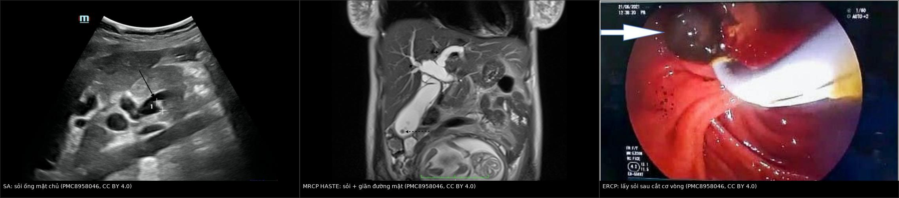
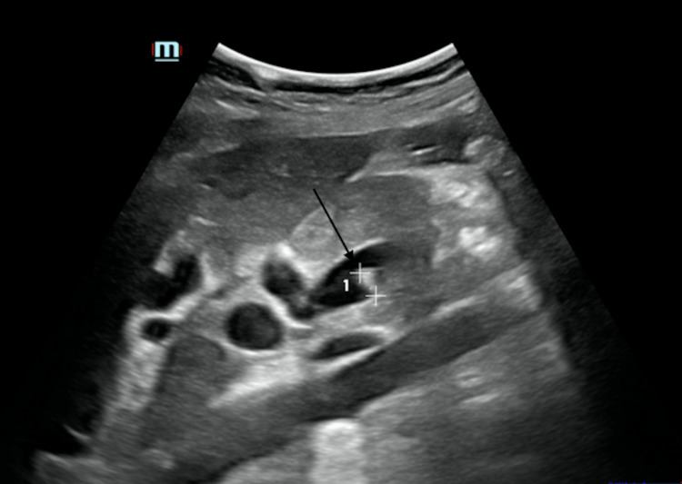
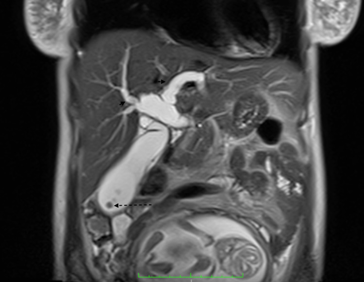
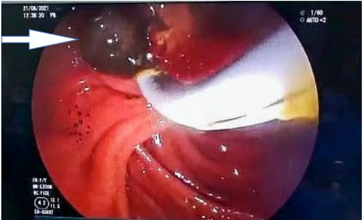

1929 — Viêm đường mật cấp ở thai phụ (acute cholangitis): TG18, dẫn lưu trong 6–24 giờ, ERCP dưới 0,5 mGy / Acute cholangitis in pregnancy
Tags: pattern:viem pattern:tac-nghen pattern:gian-ong-mat pattern:soi vung:duong-mat vung:tui-mat vung:thai-nhi score:TG18 protocol:sieu-am-bung protocol:MRCP protocol:ERCP
Mức chắc chắn (certainty): tổng hợp y văn (literature synthesis) — ghép tổng quan điều trị nhiễm khuẩn đường mật 2023 (PMC10380792: tiêu chuẩn và phân độ TG18, thời điểm dẫn lưu), ca thai phụ có ảnh siêu âm – MRCP – ERCP (PMC8958046), phân tích tổng hợp ERCP trong thai 27 nghiên cứu/1.307 ca (PMC6941455), sổ đăng ký toàn quốc Thụy Điển (PMC10793794: 291 cắt túi mật + 63 ERCP ở thai), nghiên cứu thời điểm ERCP (PMC7145040, PMC9594008, PMC13467050), tổng quan kỹ thuật ERCP ở thai (PMC7541181), phân tích tổng hợp kháng sinh ngắn vs dài (PMC10237100) và nghiên cứu giá trị Charcot/TG18 (PMC12482217). Số nào nguồn không nêu ghi "chưa rõ".
Câu chốt: viêm đường mật ở thai phụ là nhiễm khuẩn ứ mật dưới áp lực — kháng sinh không cứu được nếu không giải áp, và ERCP không chống chỉ định vì thai. Ba con số quyết định: tử vong chung 1,9% nhưng tới 20% khi có vi khuẩn kháng đa thuốc; dẫn lưu trong 6 giờ nếu sốc, và ERCP < 24 giờ giảm 20% tử vong so với ≥ 24 giờ; trong thai, ERCP có biến cố thai 5,2–6,2% và liều xạ trung bình < 0,5 mGy — thấp hơn 20 lần ngưỡng 10 mGy gây dị tật.
1. Tổng quan bệnh học – cơ chế hình ảnh
1.1 Vì sao thai phụ có sỏi và vì sao sỏi gây NHIỄM (TẠI SAO)
- Sỏi hình thành nhanh trong thai: estrogen làm gan tăng bài xuất cholesterol → mật quá bão hòa; progesterone làm giảm co bóp túi mật → ứ trệ. Trong nghiên cứu tiến cứu 3.200 thai phụ có siêu âm bình thường ban đầu, sỏi/bùn mật mới xuất hiện ở 7,1% (quý II), 7,9% (quý III) và 10,2% (6 tuần sau sinh); 1,2% có triệu chứng, và 10% trong số có triệu chứng tiến triển thành biến chứng nặng (viêm túi mật, viêm đường mật, sỏi ống mật chủ, hẹp, viêm tụy) (PMC6941455). Sỏi mật gặp ở 12% thai kỳ và hậu sản; sỏi ống mật chủ ≈ 1/1.200 ca sinh (PMC8958046).
- Vì sao ứ mật thành nhiễm khuẩn: sỏi kẹt → tăng áp lực trong ống mật → giãn đường mật + trào ngược vi khuẩn từ tá tràng (cholangiovenous reflux) → vi khuẩn đường ruột (E. coli, Klebsiella, Enterococcus, Enterobacter) vào máu. Vì vậy tam chứng Charcot chỉ là phần nổi: sốt – đau – vàng da, còn tụt áp và rối loạn tri giác (ngũ chứng Reynolds) là đã có nhiễm khuẩn huyết.
- Vì sao kháng sinh đơn thuần thất bại: thuốc không thấm vào mật ứ dưới áp lực và màng sinh học trên sỏi; ổ nhiễm chỉ được giải quyết khi áp lực đường mật giảm (dẫn lưu). Đây là lý do TG18 đặt dẫn lưu đường mật là điều trị cốt lõi, kháng sinh chỉ hỗ trợ (PMC10380792).
- Vì sao thai làm bệnh nặng hơn: giảm dự trữ chức năng gan–thận, tăng thể tích máu, giảm đáp ứng viêm và chậm trễ chẩn đoán vì "đau bụng là chuyện của thai" → thai phụ thường tới ở giai đoạn sốc nhiễm khuẩn.
1.2 Vì sao hình ảnh trông như vậy (vật lý từng phương thức)
- Siêu âm (bước 1): sỏi là cấu trúc tăng hồi âm + bóng lưng sạch; giãn ống mật chủ là ống dạng dịch, trống âm, chạy song song tĩnh mạch cửa ("dấu ống song song"). Siêu âm không tia xạ, làm tại giường, nhưng bỏ sót sỏi đoạn xa vì hơi ruột và không phân biệt được bùn/sỏi nhỏ.
- MRCP (khi nghi sỏi hoặc cần bản đồ trước ERCP): mật là dịch T2 rất sáng, sỏi là vùng mất tín hiệu (signal void) trong lòng ống, không cần cản quang → không cần gadolinium (an toàn hơn cho thai). Hình dày lát MIP cho bản đồ toàn bộ cây đường mật; hạn chế là sỏi < 3 mm và bùn dễ bị bỏ sót.
- CT: hạn chế trong thai; dùng liều thấp khi nghi biến chứng (thủng, áp-xe, viêm tụy hoại tử) hoặc khi siêu âm/MRCP không trả lời được câu hỏi can thiệp.
- ERCP: không phải "chẩn đoán hình ảnh" mà là điều trị + chẩn đoán tại chỗ — nhìn mủ chảy ra từ bóng Vater (dấu hiệu chắc chắn nhất của viêm đường mật mủ), cắt cơ vòng, lấy sỏi, đặt stent. Fluoroscopy chỉ dùng ngắn để xác nhận vị trí.
1.3 Ngưỡng định lượng nằm lòng
| Đại lượng | Ngưỡng / con số | Ý nghĩa | Nguồn |
|---|---|---|---|
| Sỏi/bùn mật mới trong thai | 7,1% quý II · 7,9% quý III · 10,2% sau sinh 6 tuần | Bệnh lý mật tăng dần theo tuổi thai | PMC6941455 |
| Sỏi ống mật chủ ở thai | ≈ 1/1.200 ca sinh | Hiếm nhưng là nguyên nhân chính của viêm đường mật | PMC8958046 |
| Vàng da theo TG18 | bilirubin ≥ 2 mg/dL | Tiêu chuẩn B1 (ứ mật) | PMC10380792 |
| Chẩn đoán TG18 | Nghi: A + (B hoặc C) · Xác định: A + B + C | A = viêm toàn thân, B = ứ mật, C = hình ảnh | PMC10380792 |
| Độ III (nặng) | Suy tạng: dopamine ≥ 5 µg/kg/phút hoặc norepinephrine, PaO₂/FiO₂ < 300**, **creatinin > 2,0 mg/dL, PT-INR > 1,5, tiểu cầu < 100.000/mm³, rối loạn tri giác | Phải dẫn lưu khẩn | PMC10380792 |
| Độ II (trung bình) | 2 trong 5: BC > 12.000 hoặc < 4.000/mm³, sốt ≥ 39 °C, tuổi ≥ 75, bilirubin ≥ 5 mg/dL, albumin thấp | Dẫn lưu sớm | PMC10380792 |
| Sốc nhiễm khuẩn | Dẫn lưu đường mật trong 6 giờ | Không chờ "ổn định" | PMC10380792 |
| ERCP < 24 giờ | Giảm 20% tử vong so với ≥ 24 giờ (phân tích tổng hợp) | Dẫn lưu sớm có lợi | PMC10380792 |
| Tử vong chung | 1,9% (84.063 bệnh nhân, 14 nghiên cứu); 4,3% khi loại nghiên cứu cơ sở dữ liệu hành chính | Nền để so sánh | PMC7145040 |
| Tử vong khi kháng đa thuốc | tới 20% | Lý do cấy + xuống thang kháng sinh | PMC10380792 |
| Xạ trong ERCP ở thai | fluoroscopy trung bình 15 giây, liều < 0,5 mGy | Ngưỡng phản ứng mô 10 mGy → an toàn | PMC7541181 |
| Biến cố ERCP ở thai | 15,9% tổng; thai 5,2–6,2%; mẹ liên quan thai 7,1–8,4% | 27 nghiên cứu, 1.307 thai phụ | PMC6941455 |
| Kháng sinh ngắn (2–3 ngày) | OR 0,78 (0,23–2,67) so với dài hơn | Không thua kém về tử vong | PMC10237100 |
2. Mẫu hình + chẩn đoán phân biệt theo vị trí (gamut)
Mẫu hình chính: đau hạ sườn phải/thượng vị + sốt ± vàng da ở thai phụ → giãn đường mật + sỏi → viêm đường mật. Gamut xếp theo vị trí ổ và mức tắc:
- Trong lòng ống mật: sỏi ống mật chủ (hay nhất), sỏi kẹt bóng Vater, bùn mật, ký sinh trùng (Ascaris, Fasciola), mảnh stent cũ/di trú — giãn đường mật + sỏi thấy trên siêu âm/MRCP.
- Thành ống mật: hẹp lành tính sau cắt túi mật (bài 108), hẹp miệng nối sau ghép, xơ đường mật nguyên phát (PSC) — giãn + hẹp dài, không sỏi.
- Ngoài lòng ống (chèn ép): Mirizzi (sỏi ống túi mật chèn ống gan chung), u đường mật/tụy đầu (bài 136), hạch — giãn đường mật, không sỏi trong lòng.
- Gan – nhu mô: viêm gan virus/thuốc (ALT/AST rất cao, không giãn đường mật), áp-xe gan, bệnh gan do xạ.
- Thai kỳ đặc thù: ứ mật trong thai (ICP) — ngứa, acid mật tăng, không sốt, không giãn; HELLP/preeclampsia — tăng huyết áp, protein niệu, tiểu cầu giảm; gan nhiễm mỡ cấp (AFLP) — hạ đường huyết, rối loạn đông máu, bệnh não.
- Ổ ngoài đường mật: viêm túi mật cấp (bài 1925), viêm tụy do sỏi, viêm thận–bể thận phải (bài 1924), viêm ruột thừa (bài 145), loét dạ dày thủng.
3. Bảng so sánh phân biệt (ma trận đối chiếu)
| Thực thể (entity) | Hình ảnh / xét nghiệm điển hình | Chốt vào (rule-in) | Chốt loại (rule-out) | Gợi ý xác nhận |
|---|---|---|---|---|
| Viêm đường mật cấp | Giãn ống mật chủ + sỏi; thành ống dày; mủ từ bóng Vater khi ERCP | Sốt/rét run + vàng da (bilirubin ≥ 2 mg/dL) + giãn đường mật/sỏi | Đường mật không giãn, không sỏi, không viêm toàn thân → loại | Siêu âm → MRCP; ERCP điều trị |
| Viêm túi mật cấp | Sỏi + thành túi mật > 3 mm + dịch quanh túi + Murphy siêu âm | Đau hạ sườn phải + Murphy + thành dày + sỏi | Đường mật không giãn, bilirubin bình thường → ít nghĩ viêm đường mật | Siêu âm (bài 1925) |
| Sỏi ống mật chủ KHÔNG nhiễm | Sỏi trong ống giãn, không dịch quanh, thành mỏng | Đau + vàng da tắc mật nhưng KHÔNG sốt, BC bình thường | Sốt + BC tăng + rét run → đã nhiễm, không còn "không nhiễm" | MRCP/EUS; ERCP lấy sỏi |
| Viêm tụy do sỏi | Tụy phù, dịch quanh tụy; lipase > 3× ULN | Đau thượng vị lan sau lưng + lipase > 3× ULN + sỏi | Lipase bình thường → loại | Lipase, CT/MRI; ERCP nếu kèm tắc |
| Viêm gan virus/thuốc | Gan không giãn đường mật; ALT/AST > 1.000 U/L | ALT/AST rất cao + không giãn đường mật + không sỏi | Giãn đường mật + sỏi → không phải viêm gan đơn thuần | Huyết thanh virus, tiền sử thuốc |
| Ứ mật trong thai (ICP) | Không giãn đường mật, không sỏi; acid mật tăng | Ngứa + acid mật tăng + không sốt | Sốt + đau + giãn đường mật → không phải ICP | Acid mật, men gan; theo dõi thai |
| HELLP / preeclampsia | Gan có thể hồ máu dưới bao, không giãn đường mật | HA ≥ 140/90 + protein niệu + tiểu cầu < 100.000/mm³ + LDH tăng | Không tăng HA, không protein niệu → ít nghĩ | Xét nghiệm sản khoa; không ERCP |
| Gan nhiễm mỡ cấp (AFLP) | Gan giảm đậm độ lan tỏa, không giãn đường mật | Vàng da + hạ đường huyết + rối loạn đông máu + bệnh não | Đường mật giãn + sỏi → không phải AFLP | Xét nghiệm; cấp cứu sản khoa |

Hình 1 — Trái: siêu âm ngang ống mật chủ, mũi tên chỉ sỏi tăng hồi âm trong lòng ống giãn. Giữa: MRCP HASTE coronal — nhiều sỏi mất tín hiệu trong túi mật căng và giãn đường mật trong + ngoài gan. Phải: ERCP sau cắt cơ vòng — sỏi (mũi tên) được lấy ra khỏi bóng Vater. Nguồn: PMC8958046 Fig. 2, 3, 5, CC BY 4.0; ảnh ghép letterbox, không crop/kéo giãn.4. Protocol + phân độ TG18 + quyết định
4.1 Chẩn đoán theo TG18 (2018)
- A – Viêm toàn thân: sốt và/hoặc rét run; BC tăng/giảm, CRP tăng.
- B – Ứ mật: vàng da (bilirubin ≥ 2 mg/dL); ALP, GGT, transaminase tăng.
- C – Hình ảnh: giãn đường mật; bằng chứng nguyên nhân (sỏi, hẹp, stent).
- Nghi ngờ: A + (B hoặc C); xác định: A + B + C (PMC10380792).
- Cấy máu 2 lần + cấy mật khi ERCP trước/sớm sau kháng sinh; không chờ kết quả để dẫn lưu.
4.2 Phân độ và thời điểm dẫn lưu
flowchart TD
A[Thai phụ đau hạ sườn phải hoặc thượng vị + sốt] --> B[Siêu âm bụng: giãn đường mật, sỏi, thành túi mật]
B --> C[TG18: A viêm toàn thân + B ứ mật + C hình ảnh]
C --> D{Phân độ}
D -->|Độ I| E[Kháng sinh + theo dõi 24 giờ; dẫn lưu nếu không đáp ứng]
D -->|Độ II| F[ERCP sớm trong 24 giờ]
D -->|Độ III hoặc sốc| G[Hồi sức + dẫn lưu trong 6 giờ]
F --> H{ERCP thành công}
G --> H
H -->|Có| I[Lấy sỏi hoặc đặt stent + kháng sinh ngắn]
H -->|Thất bại hoặc không làm được| J[Dẫn lưu qua da PTBD]
I --> K[Cắt túi mật nội soi cùng đợt hoặc sau sinh]
J --> K
- Độ I: kháng sinh + theo dõi; dẫn lưu nếu không cải thiện trong 24 giờ.
- Độ II: ERCP sớm (< 24 giờ); độ III/sốc: dẫn lưu trong 6 giờ song song hồi sức (PMC10380792).
- Thất bại ERCP (không tiếp cận được bóng Vater, hẹp dài, thai quá lớn): dẫn lưu đường mật qua da (PTBD) hoặc mổ dẫn lưu — không chờ.
- Sau khi giải áp: cắt túi mật nội soi (cùng đợt nếu quý II và ổn định, hoặc sau sinh) vì sỏi còn đó; trì hoãn làm tăng tái phát và can thiệp sau sinh (bài 1925).
4.3 ERCP ở thai phụ — kỹ thuật và an toàn
- Tư thế: nghiêng chậu trái hoặc nằm nghiêng trái để giảm chèn ép tĩnh mạch chủ; an thần liều thấp nhất hiệu quả với thuốc nhóm B (PMC7541181).
- Giảm xạ: che chắn ngoài, giảm thời gian chiếu, liều thấp, chiếu xung; trung bình 15 giây, < 0,5 mGy — dưới ngưỡng 10 mGy gây phản ứng mô (PMC7541181).
- ERCP không dùng xạ (US/EUS dẫn đường): khả thi ở 21 thai phụ, lấy sạch sỏi 100%, chỉ 5 ca cần fluoroscopy, viêm tụy sau ERCP 3,8% — nhưng đòi hỏi bác sĩ rất có kinh nghiệm (PMC7541181).
- Nơi làm: trung tâm có kinh nghiệm, có sản khoa theo dõi tim thai trước – trong – sau; quý I nhạy cảm nhất với tạo cơ quan nên tối ưu hóa giảm xạ (PMC7541181).
- Bằng chứng an toàn: 63 ERCP ở thai trong sổ đăng ký Thụy Điển không làm tăng biến cố 30 ngày so với phụ nữ không mang thai sau khi hiệu chỉnh (PMC10793794); phân tích tổng hợp 1.307 ca cho biến cố thai 5,2–6,2%, không khác biệt giữa có và không dùng xạ (PMC6941455).
4.4 Kháng sinh
- Khởi đầu: cephalosporin thế hệ 3 (ceftriaxone/cefotaxime) ± metronidazole nếu nghi kỵ khí; piperacillin–tazobactam hoặc carbapenem khi sốc/yếu tố nguy cơ vi khuẩn kháng (PMC10380792).
- Thời gian: sau khi dẫn lưu hiệu quả, không cần kéo dài mặc định — 2–3 ngày không thua kém phác đồ dài về tử vong (OR 0,78; 0,23–2,67) (PMC10237100); xuống thang theo cấy.
- Kiểm soát ổ nhiễm quan trọng hơn thời gian kháng sinh: bệnh nhân không cải thiện sau 24–48 giờ phải kiểm tra lại dẫn lưu, không phải "đổi kháng sinh mạnh hơn".
5. Biến thể bình thường và cạm bẫy
- Tam chứng Charcot KHÔNG đủ để loại trừ: độ nhạy chỉ 25,4% (đủ 3 thành tố) và 28,6% (thiếu thành tố); TG18 "xác định" có độ nhạy 65,1%, độ đặc hiệu 88,4% (PMC12482217). Không có tam chứng không có nghĩa không viêm đường mật.
- Sốt + vàng da chưa chắc là viêm đường mật: HELLP, gan nhiễm mỡ cấp, viêm gan virus đều vàng da + men gan cao; không giãn đường mật là mấu chốt — ERCP ở các bệnh này là can thiệp oan.
- "Chờ ổn định rồi mới dẫn lưu": ngược lại — ở sốc nhiễm khuẩn, dẫn lưu trong 6 giờ; chờ kháng sinh "ổn định" là chờ tử vong (PMC10380792).
- Sợ tia mà bỏ ERCP: liều thực tế < 0,5 mGy, thấp hơn 20 lần ngưỡng 10 mGy; bỏ dẫn lưu vì sợ tia gây hại nhiều hơn.
- Sỏi < 3 mm và bùn: MRCP dễ bỏ sót; nếu lâm sàng mạnh mà MRCP âm, EUS là bước tiếp theo trước khi kết luận "không tắc".
- Khí trong đường mật sau ERCP/cắt cơ vòng: không phải sỏi — đừng đọc thành "sỏi tái phát" trên siêu âm/CT.
- Viêm tụy sau ERCP vs viêm đường mật nặng lên: đau tăng + lipase > 3× ULN sau thủ thuật là viêm tụy sau ERCP (xử trí nội khoa), không phải thất bại dẫn lưu.
- Nghiên cứu thời điểm ERCP có thể gây nhầm: trong đoàn hệ 271 ca, tử vong 30 ngày cao nhất ở nhóm ERCP ≤ 24 giờ (16,7% vs 5,6% vs 6,6%) — vì nhóm này bệnh nặng nhất (qSOFA cao hơn), không phải vì ERCP sớm có hại; đây là thiên lệch chỉ định kinh điển (PMC13467050).
- Không được quên cắt túi mật: chỉ ERCP mà bỏ túi mật thì sỏi còn nguyên; trì hoãn tới sau sinh làm 29% phải can thiệp trong 90 ngày sau sinh (bài 1925).
6. Tự lượng giá — Blind Quiz
Ca 1 — Thai 26 tuần, đau hạ sườn phải 2 ngày, sốt 39,2 °C, vàng da nhẹ, BC 19.000/mm³, bilirubin 4,8 mg/dL. Siêu âm: ống mật chủ 12 mm, có sỏi.

- Câu hỏi: (1) Đủ tiêu chuẩn TG18 chưa, phân độ nào? (2) Bước tiếp theo và thời hạn? (3) Kháng sinh bao lâu?
Bấm để hiện đáp án (findings + chẩn đoán)
- Findings: ống mật chủ 12 mm (giãn) với sỏi tăng hồi âm trong lòng; bilirubin 4,8 mg/dL (≥ 2 = ứ mật); sốt 39,2 °C, BC 19.000/mm³.
- TG18: A (sốt + BC tăng) + B (bilirubin ≥ 2) + C (giãn + sỏi) → xác định. Độ II: có 2 tiêu chuẩn (sốt ≥ 39 °C và BC > 12.000/mm³); không suy tạng nên không phải độ III.
- Xử trí: ERCP sớm trong 24 giờ (độ II) + kháng sinh IV + theo dõi sản khoa; nếu tụt áp/rối loạn tri giác → độ III, dẫn lưu trong 6 giờ.
- Kháng sinh: 2–3 ngày sau dẫn lưu hiệu quả là đủ (OR 0,78 so với dài hơn); xuống thang theo cấy.
- Nguồn ảnh: Cureus 2022, PMC8958046, Fig. 2, CC BY 4.0.
Ca 2 — Cùng bệnh nhân, siêu âm không thấy sỏi đoạn xa. Có nên làm ERCP mù không?

- Câu hỏi: (1) Mô tả findings? (2) Vì sao MRCP trước ERCP? (3) Nếu MRCP âm mà lâm sàng mạnh thì sao?
Bấm để hiện đáp án (findings + chẩn đoán)
- Findings: HASTE coronal — nhiều sỏi mất tín hiệu trong túi mật căng (mũi tên đứt) và giãn đường mật trong + ngoài gan (mũi tên liền).
- Vì sao MRCP: xác định vị trí và số sỏi, bản đồ đường mật trước can thiệp, không cần cản quang gadolinium, giúp rút ngắn thời gian ERCP và giảm xạ.
- Nếu MRCP âm: EUS (Se 0,97/Sp 0,90 cho sỏi ống mật chủ) trước khi kết luận; không ERCP mù khi không có bằng chứng tắc.
- Lưu ý: sỏi < 3 mm và bùn có thể không thấy trên MRCP.
- Nguồn ảnh: PMC8958046, Fig. 3, CC BY 4.0.
Ca 3 — Sau ERCP lấy sỏi, bệnh nhân hết đau, bilirubin về bình thường trong 48 giờ. Thai 26 tuần ổn định. Kế hoạch tiếp theo?

- Câu hỏi: (1) Vì sao không dừng ở ERCP? (2) Khi nào cắt túi mật? (3) Theo dõi gì sau thủ thuật?
Bấm để hiện đáp án (findings + chẩn đoán)
- Findings: hình nội soi sau cắt cơ vòng Oddi, sỏi (mũi tên) đang được lấy ra khỏi bóng Vater; sau đó đường mật thông.
- Vì sao không dừng: túi mật còn sỏi là ổ tái phát; chỉ ERCP mà không cắt túi mật thì nguy cơ tái phát cao và 29% phải can thiệp trong 90 ngày sau sinh (bài 1925).
- Khi nào cắt: cắt túi mật nội soi cùng đợt nhập viện nếu quý II và ổn định; nếu quý III hoặc sát sinh → sau sinh, sớm, không chờ cai sữa.
- Theo dõi: lipase (viêm tụy sau ERCP 3,8% trong kỹ thuật không xạ), dấu nhiễm trùng, tim thai; kháng sinh 2–3 ngày.
- Nguồn ảnh: PMC8958046, Fig. 5, CC BY 4.0.
Bài liên quan chéo
- 100 – Tổng quan hệ Bụng
- 1925 – Viêm túi mật cấp ở thai phụ: TG18, cắt nội soi bất kể tam cá nguyệt
- 138 – Sỏi trong gan & viêm đường mật mủ tái phát
- 174 – Giun đũa đường mật: dấu "bốn đường" và ống mật giả tắc
- 108 – Tổn thương đường mật sau cắt túi mật: phân độ Strasberg–Bismuth
- 130 – Túi mật: viêm, sỏi, polyp
- 1924 – Sốc nhiễm khuẩn từ đường niệu ở thai phụ
- 1926 – Viêm màng ối – nhiễm khuẩn ối: chẩn đoán lâm sàng + dịch ối
Ảnh
1929_viem-duong-mat_US_PMC8958046-Fig2.jpg— siêu âm: sỏi ống mật chủ (PMC8958046, Fig. 2, CC BY 4.0).1929_viem-duong-mat_MRCP_PMC8958046-Fig3.jpg— MRCP HASTE: sỏi + giãn đường mật (PMC8958046, Fig. 3, CC BY 4.0).1929_viem-duong-mat_ERCP_PMC8958046-Fig5.jpg— ERCP: lấy sỏi sau cắt cơ vòng (PMC8958046, Fig. 5, CC BY 4.0).composite_chan-doan.jpg— ảnh ghép 3 bước (PMC8958046 Fig. 2, 3, 5), CC BY 4.0.
Không dùng để chẩn đoán độc lập khi chưa có người hướng dẫn.